3 Research Design, Data Analysis, and Statistical Modelling
3.1 Introduction
This unit introduces essential concepts for conducting experimental research, with a focus on problem formulation, modeling, simulation, data collection, and statistical analysis using R-software. The content equips engineering students with the knowledge to design and analyze experiments, interpret results, and apply statistical methodologies in real-world engineering projects.
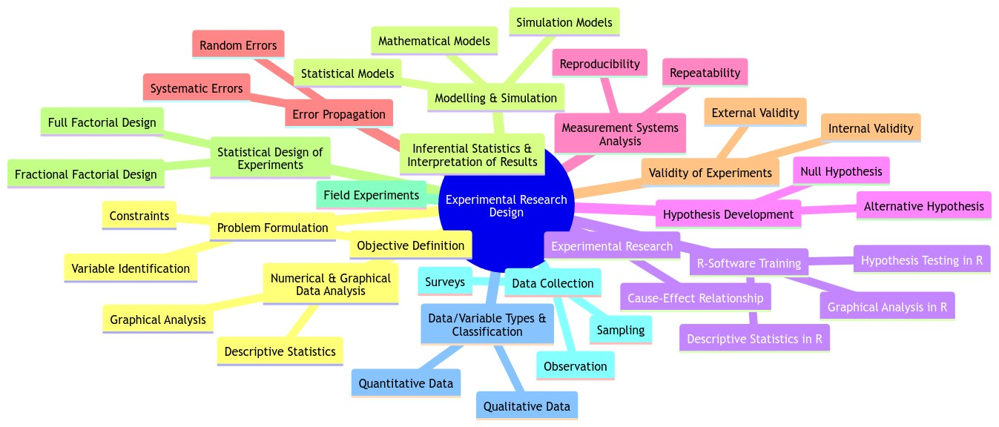
3.1.1 Problem Formulation
In engineering research, problem formulation is the foundation of any experiment or study. It involves defining the research objective, understanding system behavior, and identifying variables and constraints. Well-formulated problems lead to efficient experiment designs and meaningful conclusions.
Steps in Problem Formulation:
- Objective Definition: Clearly state the purpose of the experiment or study.
- Variable Identification: Determine the dependent (response) and independent (input) variables.
- Constraints: List the practical and theoretical limitations (e.g., resources, physical conditions).
3.1.2 Objective Definition
To begin with, the researcher needs to clearly define the objective of their study. A well-defined objective guides the entire research process and ensures that the study addresses specific questions effectively. For instance, consider a study aimed at evaluating the effectiveness of a new medication. The objective could be to determine whether this new medication significantly improves patient outcomes compared to a placebo. By setting a clear objective, researchers establish a focus that will help in setting precise goals, formulating hypotheses, and designing the experiment.
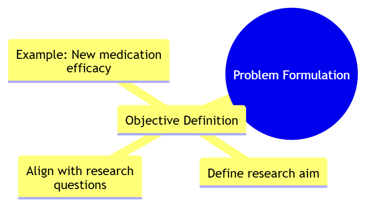
3.1.3 Variable Identification
Identifying variables is crucial for designing an effective experiment. Variables are classified into independent, dependent, and control categories. The independent variables are those that are manipulated by the researcher, while dependent variables are the outcomes measured in response to these manipulations. Control variables are kept constant to ensure that they do not affect the results.
For example, in a clinical trial investigating a new drug, the independent variable could be the dosage of the drug administered, the dependent variable could be the reduction in symptoms, and control variables might include factors like the age and gender of participants. By carefully identifying and controlling these variables, researchers can isolate the effects of the independent variables on the dependent variables.
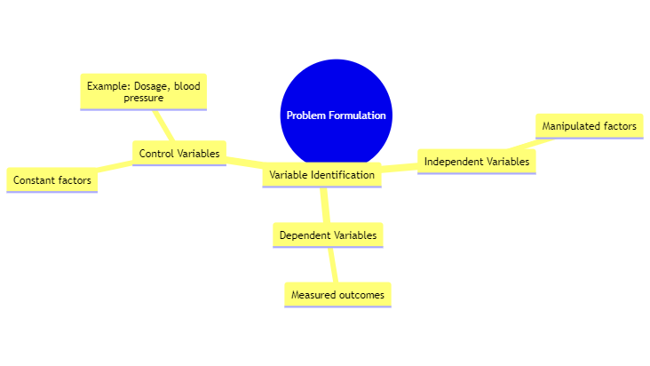
3.1.4 Constraints
Constraints are limitations that affect the research design and implementation. These could be related to budget, time, or resources. Identifying constraints helps researchers plan a feasible study and manage expectations realistically.
For instance, if a research project is constrained by a limited budget, it may be necessary to reduce the number of participants or simplify the experimental design. Similarly, time constraints might affect the duration of the study or the complexity of the data collection process. Understanding these constraints is essential for developing a practical research plan that can achieve meaningful results within the available resources.
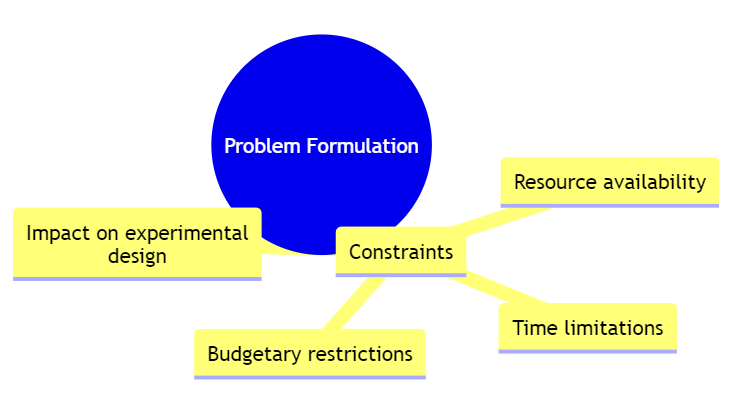
3.1.5 Modelling & Simulation
3.1.5.1 Mathematical Models
Mathematical models use mathematical equations to represent relationships between variables and predict outcomes. These models help in understanding complex systems and making quantitative predictions.
For example, a linear regression model might be used to study the effect of different drug dosages on blood pressure. In this case, the model would use an equation to describe the relationship between dosage (independent variable) and blood pressure (dependent variable). The results can provide insights into how varying dosages might affect blood pressure, helping researchers optimize treatment protocols.
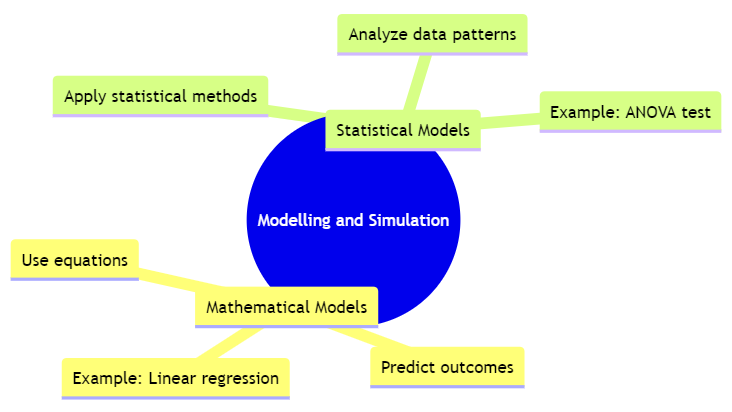
3.1.5.2 Simulation Models
Simulation models replicate real-world processes to predict outcomes under various scenarios. They allow researchers to test different conditions and understand how variables interact in a controlled environment.
For example, a Monte Carlo simulation might be used to assess the risk of different investment strategies. By running simulations with random variables representing market conditions, researchers can estimate the potential risks and returns of various investment options, helping investors make informed decisions based on simulated outcomes.
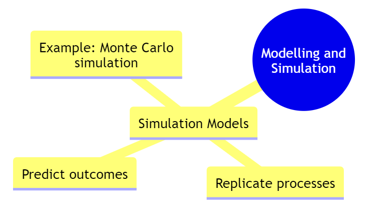
3.2 Experimental Research
3.2.1 Cause-Effect Relationship
Establishing a cause-effect relationship involves demonstrating that changes in one variable directly cause changes in another. This is achieved through controlled experiments where the independent variable is manipulated and the effects on the dependent variable are observed.
For example, in an experiment testing a new drug, researchers might manipulate the dosage of the drug (independent variable) and measure the resulting changes in patient health outcomes (dependent variable). By controlling other factors and observing the direct impact of the dosage on health outcomes, researchers can establish a causal link between the drug dosage and its effects.
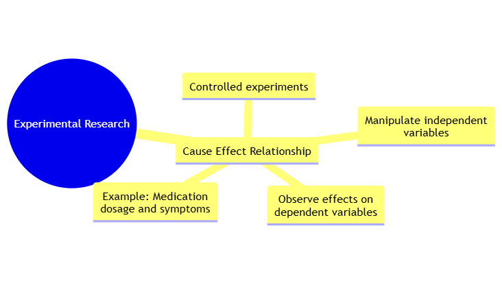
3.3 Hypothesis Development
3.3.1 Null Hypothesis (H₀)
The null hypothesis (H₀) is a statement that assumes no effect or no difference between groups. It serves as the default assumption that researchers aim to test against.
For instance, in a clinical trial comparing two drugs, the null hypothesis might state, “There is no difference in blood pressure reduction between Drug A and Drug B.” Researchers then use statistical tests to determine if the observed data provides sufficient evidence to reject this null hypothesis.
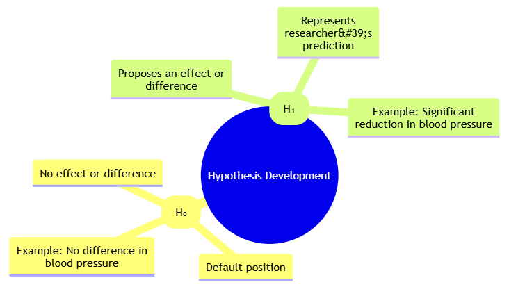
3.3.2 Alternative Hypothesis (H₁)
The alternative hypothesis (H₁) proposes that there is an effect or difference between groups. It reflects the researcher’s prediction or expectation.
For example, if researchers believe that Drug A will significantly reduce blood pressure more than Drug B, the alternative hypothesis might be, “Patients receiving Drug A will experience a greater reduction in blood pressure compared to those receiving Drug B.” This hypothesis is tested against the null hypothesis to evaluate the evidence for the predicted effect.
3.4 Measurement Systems Analysis
3.4.1 Repeatability
Repeatability measures how consistently a measurement can be repeated under the same conditions. It indicates the reliability of the measurement process when performed by the same operator.
For example, if a technician repeatedly measures the weight of the same sample using a scale and obtains nearly identical readings each time, the measurement system demonstrates good repeatability. Ensuring high repeatability is crucial for reliable and consistent data collection.
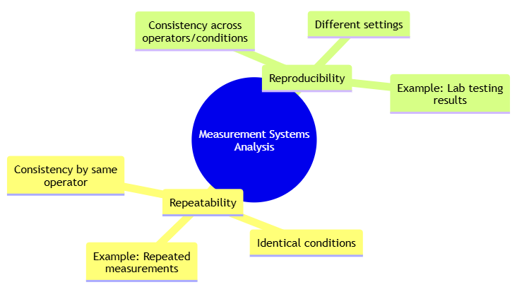
3.4.2 Reproducibility
Reproducibility assesses how consistently measurements can be obtained across different operators or settings. It evaluates whether different individuals or environments yield similar results.
For example, if different laboratories test the same sample and obtain comparable results, the measurement system shows high reproducibility. Reproducibility is important for validating that results are reliable and can be generalized across different conditions.
3.5 Error Propagation
3.5.1 Systematic Errors
Systematic errors are consistent and repeatable errors that affect the accuracy of measurements. They often stem from calibration issues or inherent biases in the measurement system.
For instance, if a weighing scale consistently reads 2 kg heavier than the actual weight due to a calibration error, all measurements will be affected by this systematic error. Identifying and correcting systematic errors is essential for accurate measurements.
3.5.2 Random Errors
Random errors are unpredictable variations that affect the precision of measurements. These errors can result from environmental fluctuations or human factors and are less consistent than systematic errors.
For example, slight variations in temperature or measurement technique can introduce random errors into the data. While random errors cannot be completely eliminated, they can be minimized through careful measurement practices and statistical analysis.
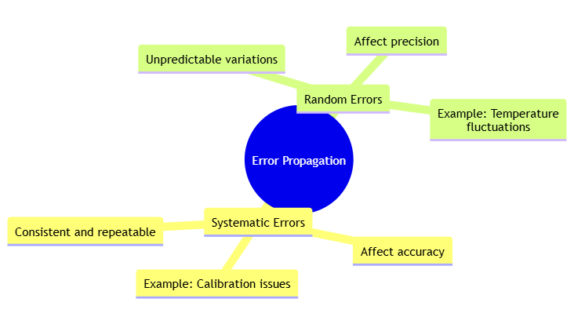
3.6 Validity of Experiments
3.7 Internal Validity
Internal validity refers to the extent to which an experiment accurately measures the effect of the independent variable on the dependent variable, without interference from extraneous factors. High internal validity ensures that the observed effects are due to the manipulated variables alone.
For example, a clinical trial with rigorous control over participant selection and environmental conditions will have high internal validity, as it effectively isolates the effect of the drug from other variables.
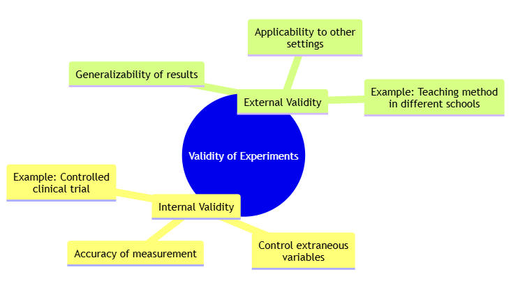
3.7.1 External Validity
External validity is the degree to which the results of an experiment can be generalized to other settings, populations, or times. It assesses whether the findings are applicable beyond the specific conditions of the study.
For example, if a new teaching method is tested in a single school and shows positive results, its external validity would depend on whether similar effects are observed in other schools or educational settings.
3.8 Statistical Design of Experiments
3.8.1 Full Factorial Design
Full factorial design examines all possible combinations of factors and their levels, providing comprehensive insights into the interactions between variables. This design is useful for understanding how multiple factors simultaneously affect the outcome.
For example, a full factorial design might explore how different levels of temperature and pressure affect the yield of a chemical reaction. By examining all possible combinations of these factors, researchers can determine their individual and interactive effects on the reaction yield.
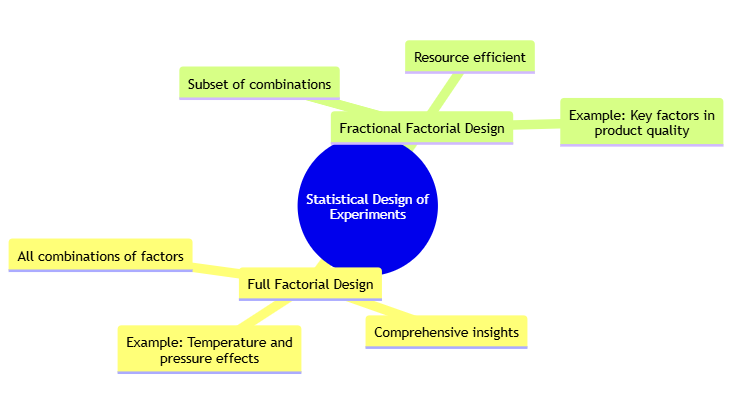
3.8.2 Fractional Factorial Design
Fractional factorial design involves testing only a subset of all possible combinations of factors. It is resource-efficient and suitable when dealing with a large number of variables, providing valuable information while reducing the number of experiments required.
For example, if studying the effects of five different factors on product quality, a fractional factorial design might select a subset of factor combinations to analyze, thereby saving time and resources while still yielding significant insights.
3.8.3 Field Experiments
Field experiments are conducted in natural settings rather than controlled environments. They provide insights into how variables interact in real-world conditions, offering practical evidence of effectiveness.
For instance, a field experiment might test the impact of a new teaching method in a classroom setting. Researchers can observe how the method performs under everyday classroom conditions, providing valuable information about its real-world effectiveness.
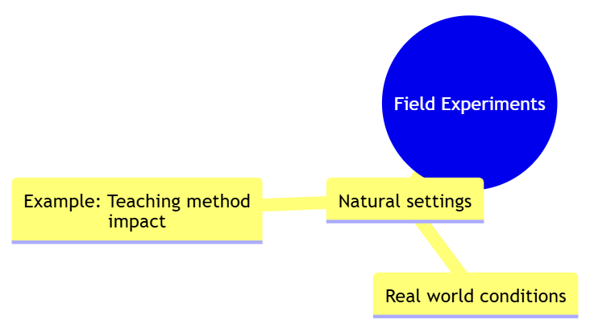
3.9 Data Collection
3.9.1 Surveys
Surveys involve gathering data through questionnaires or interviews, enabling researchers to collect information from a large number of participants. They are useful for exploring public opinions or behaviors.
For example, a public opinion survey might be conducted to gauge attitudes towards a new policy. By asking participants about their views and experiences, researchers can obtain a broad understanding of public sentiment and its implications for policy implementation.
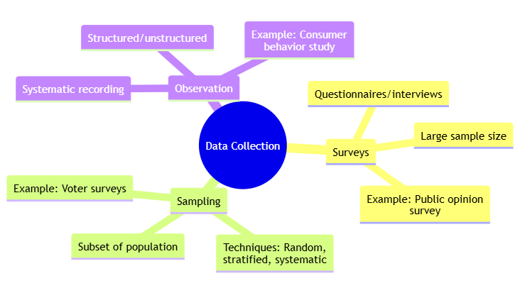
3.9.2 Sampling
Sampling is the process of selecting a subset of individuals from a larger population to make inferences about the entire group. Techniques include random sampling, stratified sampling, and systematic sampling.
For instance, random sampling might be used in a study to estimate election results. By surveying a randomly selected group of voters, researchers can infer the preferences of the entire voter population and predict the likely outcome of the election.
3.9.3 Observation
Observation involves systematically recording behaviors or phenomena as they occur. It can be structured or unstructured, depending on the research objectives.
For example, an observer might record consumer behavior in a store to understand shopping patterns. By noting the frequency and types of purchases, researchers can gain insights into consumer preferences and purchasing habits.
3.10 Data/Variable Types & Classification
3.10.1 Quantitative Data
Quantitative data consists of numerical values that can be measured and analyzed statistically. This type of data allows for mathematical analysis and comparisons, such as calculating averages or performing regression analysis.
For example, data on student test scores is quantitative. Researchers can use this data to compute the average score, assess the distribution of scores, and analyze correlations between test performance and other factors, such as study habits.
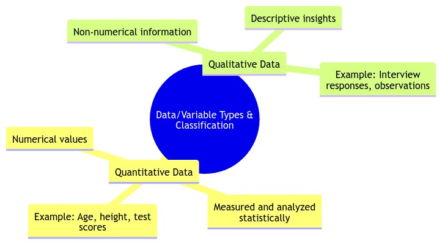
3.10.2 Qualitative Data
Qualitative data comprises non-numerical information that describes qualities or characteristics. It provides rich, descriptive insights into phenomena that are not easily quantified.
For example, interview responses about job satisfaction are qualitative. Researchers analyze these responses to identify themes and patterns in employees’ experiences and opinions, offering a deeper understanding of job satisfaction beyond numerical ratings.
3.11 Numerical & Graphical Data Analysis
3.11.1 Descriptive Statistics
Descriptive statistics summarize and describe the main features of a dataset. Key measures include mean, median, mode, variance, and standard deviation.
For example, descriptive statistics might be used to summarize survey responses on job satisfaction. By calculating the mean and standard deviation of satisfaction ratings, researchers can understand the central tendency and variability in employees’ satisfaction levels.
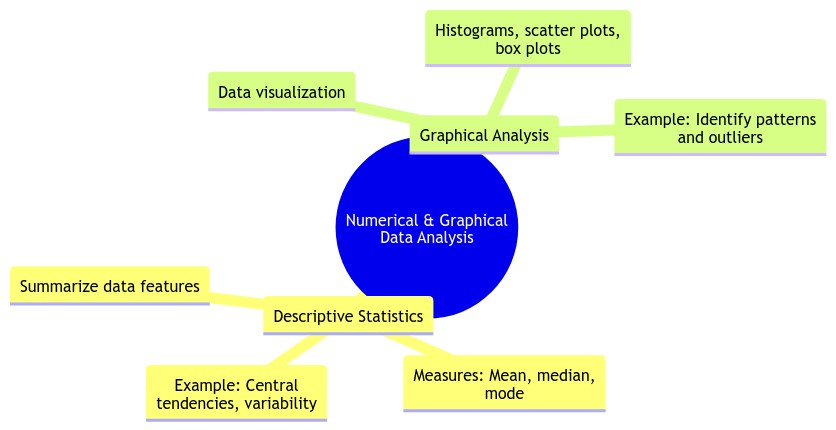
3.11.2 Graphical Analysis
Graphical analysis involves visualizing data through plots and charts to identify patterns, trends, and outliers.
For example, a scatter plot might be used to explore the relationship between study hours and test scores. By plotting individual data points, researchers can visually assess whether more study hours are associated with higher test scores and identify any outliers in the data.
3.12 Inferential Statistics & Interpretation of Results
Inferential statistics allow researchers to make generalizations about a population based on sample data. Techniques include hypothesis testing, confidence intervals, and regression analysis.
For example, researchers might use hypothesis testing to determine whether there is a significant difference in test scores between two teaching methods. By analyzing the data and calculating p-values, they can draw conclusions about the effectiveness of the teaching methods and their generalizability to other settings Knuth (1984).
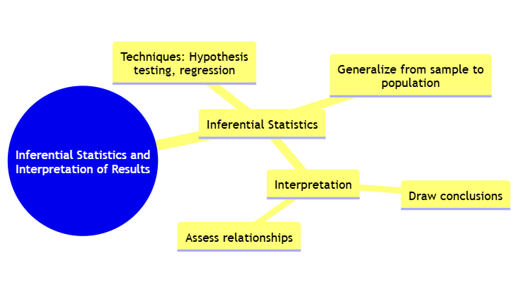